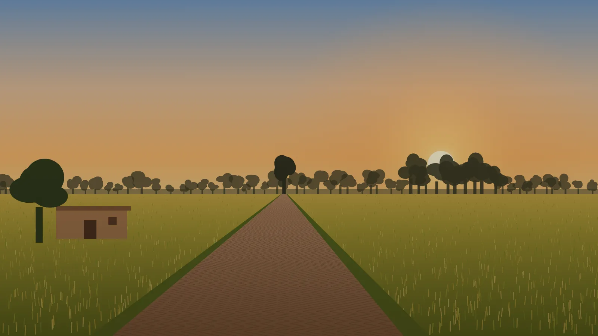

Most visitors to Lahore spend their days among Mughal forts, mosques and bazaars. But drive less than an hour out of the city and you reach a completely different Punjab: narrow brick lanes between the fields, tree lines on a flat horizon, buffaloes by the canal and villages where life still follows the farming seasons.
Video credit: this article was inspired by a reel of a village road through the fields at sunset by @shermuhhamdians on Instagram. The video belongs to its creator; you can watch it on Instagram or below this article.
The land of five rivers
Punjab takes its name from the Persian words for "five waters", after the rivers that cross the plain. It is Pakistan's farming heartland, and much of the country's wheat and rice is grown here. The countryside around Lahore, Sheikhupura and Gujranwala is part of the area known for its fragrant basmati rice.
The farming year
The fields change colour with the seasons, so every visit looks different:
- October to November: the rice harvest, when the fields turn gold and the air smells of cut paddy
- November to December: wheat is sown, and the fields turn green again over the winter
- January to February: yellow mustard flowers in many fields, and the season for sarson ka saag and makki ki roti
- April to May: the wheat harvest, followed by the hot summer months
What a village visit is like
A countryside visit is about slowing down rather than sightseeing. Expect walks along brick lanes and field edges, a look at how crops are grown and harvested, and the everyday rhythm of village life: tube wells, cattle, farm tractors and children cycling home from school. Golden hour, the last hour before sunset, is the best time for photographs, when the light turns the fields and the dusty lanes amber.
Visiting respectfully
- Villages are private, family places, so always go with someone local who can introduce you
- Ask before photographing people, especially women, and respect a "no"
- Dress modestly, with shoulders and knees covered
- Stay on paths and field edges so you don't damage the crops
Arrange a village visit with Past Enlighten
We arrange visits to villages near Lahore on request. They can be added as a short extension to a day tour, for example our Sheikhupura Fort & Hiran Minar excursion, or planned as a separate half day. Tell us your dates and what you would like to see on WhatsApp and we will suggest the best timing for the season.
Video credit: reel by @shermuhhamdians on Instagram.
Explore with Past Enlighten
Ask about route options, dates and what is included. Confirm the price and itinerary in writing before you book.
Continue planning
Travel conditions, access, schedules and prices can change. Confirm current details locally before departure.